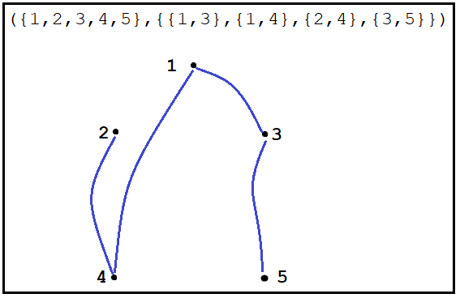

- Implement UnlabeledUndirectedGraph1 using an adjacency matrix
- You must:
- Use a layered implementation by layering on the CeramicArray1 component and its corresponding CeramicArrayChecking1 component
- Use C++'s conditional compiliation and use CeramicArrayChecking1 in Debug Mode and only CeramicArray1 when in Release mode
- Define the correspondence as a comment in the
'private: // Representation' part
- Uncomment the
'private: // Disallowed QueueOfText Operations' part and change the code found there
so that it works with UnlabeledUndirectedGraph1
- Implement UnlabeledUndirectedGraph1's operator <<
- Important requirements on implementing operator <<
- A graph variable must be displayed using its abstract mathematical model
- The vertex set must be displayed in increasing order
- Each edge (which is a set) must be displayed so that the leftmost vertex of the set is <= to the rightmost vertex
- The edge set must be displayed in nondecreasing order based on the leftmost vertex in the set
- When there are two or more edges with the same leftmost vertex, then those edges must be displayed in nondecreasing order by the rightmost vertex
- Include no extra spaces in the displayed value
- An example is shown to the right
- You may want to use ProjM2's unit tests to test your implementation
|
 |